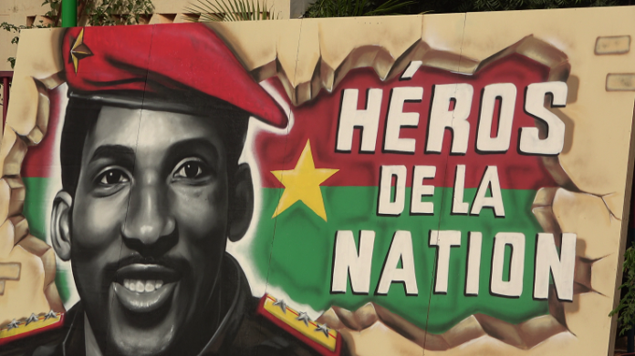
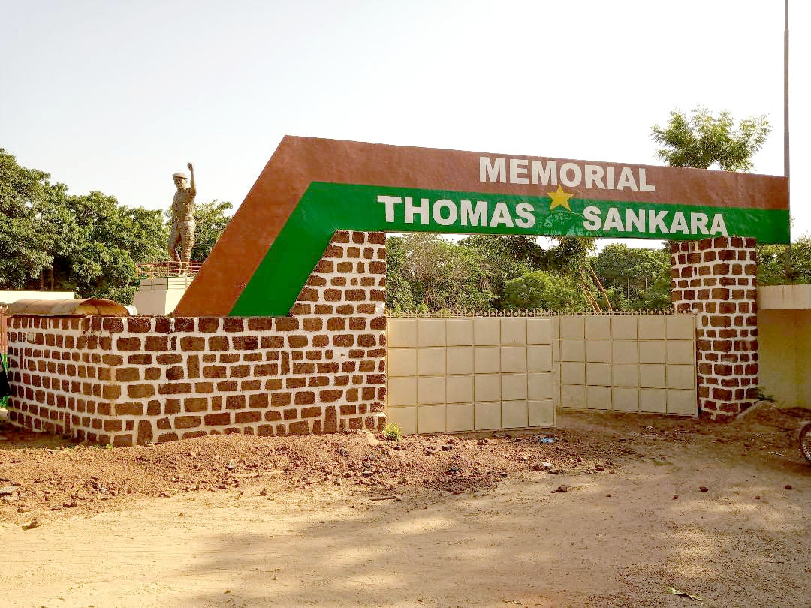
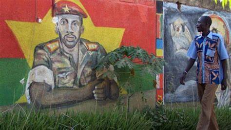
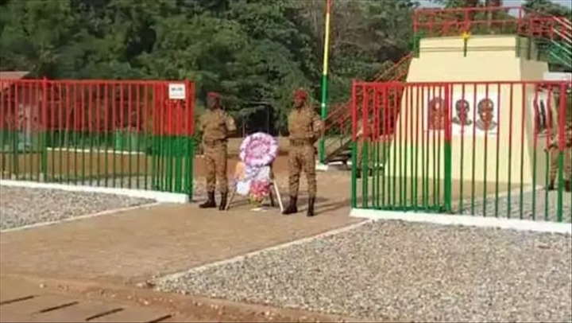
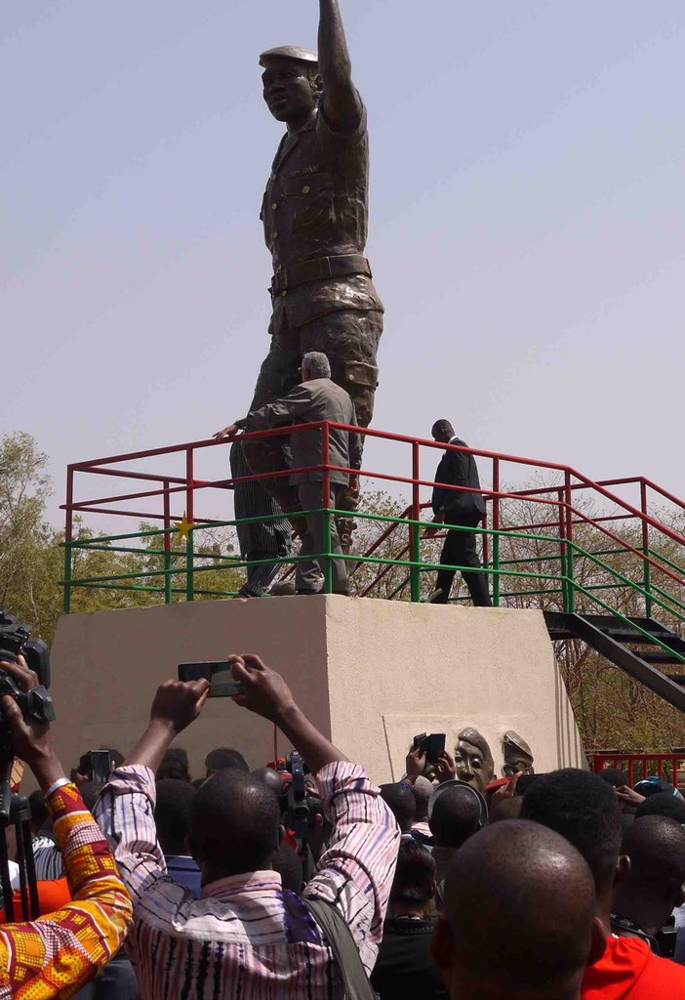

Dans les entrailles de l’histoire africaine, peu de noms résonnent avec autant de puissance que celui de Thomas Sankara. Le Mémorial qui lui est dédié n’est pas une simple construction – c’est un serment de mémoire gravé dans la pierre et dans les cœurs.
À Ouagadougou, s’élève un monument dont chaque marche semble crier : "Intégrité, courage, sacrifice !" C’est ici que repose l’écho d’un homme qui osa défier l’injustice, repousser le néocolonialisme et proclamer la grandeur d’un continent libre.
Thomas Sankara fut plus qu’un chef d’État. Il fut la voix des sans-voix, le bouclier des opprimés, le poète de la souveraineté. Son nom est inscrit aux côtés de Mandela, Lumumba et Nkrumah – des géants qui ont semé l’espoir dans la terre rouge de l’Afrique.
« Je peux perdre ma vie. Mais il ne faut jamais perdre la dignité d’un peuple. » — Thomas Sankara
Ce mémorial n’est pas figé : il vit, il respire, il raconte. Il invite chaque Burkinabè, chaque Africain, chaque citoyen du monde à méditer sur l’engagement, la solidarité, et le rêve panafricain. Car tant qu’il y aura des enfants debout, Sankara marchera encore dans nos pas.
Place de la Révolution (Place Thomas Sankara)** - *Historique* : Anciennement "Place de la Nation", rebaptisée en hommage à Thomas Sankara, leader révolutionnaire assassiné en 1987. Lieu de rassemblements politiques et culturels. - *Particularité* : Un immense portrait de Sankara et des fresques murales engagées.[00:54, 13/06/2025] Grâce: ## *Mémorial Thomas Sankara : Le Sanctuaire de l'Esprit Révolutionnaire*
Le Mémorial Thomas Sankara surgit du sol ouagalais comme un cri de pierre et d'acier, dressé à la mémoire de l'homme qui rêvait debout. Inauguré en *2019* sur les lieux mêmes où le "Che africain" fut assassiné le *15 octobre 1987*, ce monument de verre et de lumière capture l'essence fulgurante d'un président-poète. Les murs striés de rouge évoquent le sang versé, tandis que la silhouette ascendante du bâtiment symbolise l'idéal inachevé qui continue de grandir dans les cœurs. Chaque centimètre carré de ce lieu raconte une histoire : celle du petit capitaine qui osa renommer son pays, distribuer des vaccins plutôt que des Mercedes, et préférait la sobriété révolutionnaire aux ors du pouvoir. Aujourd'hui, le mémorial vibre d'une énergie contagieuse. Dans la salle des archives, les visiteurs retiennent leur souffle devant ses lunettes étoilées et ses discours manuscrits. Le jardin des réflexions, où poussent des arbres plantés par des militants venus des cinq continents, murmure des questions toujours brûlantes : "Que serait devenu le Burkina si...?" Lorsque le soleil traverse la verrière aux motifs de chaînes brisées, c'est toute l'Afrique des possibles qui semble renaître. Ce n'est pas un tombeau, mais un phare - et chaque 15 octobre, des milliers de flambeaux y dessinent dans la nuit une constellation de résistances. --- *Ce lieu vous prend aux tripes quand...* ⚡ Votre doigt effleure les dernières lignes qu'il écrivit 🌱 Vous touchez l'écorce des "arbres de la révolution" 🎧 Son rire cristallin résonne dans le casque audio "Entrez ici le cœur léger, vous en ressortirez différent : soit écrasé par le poids de l'histoire, soit porté par ses ailes." #SankaraVivant #MemorialQuiParle 👉 *Un conseil* : Visitez-le tôt le matin, quand la lumière joue avec les vitraux et que les gardiens racontent encore les histoires comme des griots modernes. [00:59, 13/06/2025] Grâce: Le *Mémorial Thomas Sankara* a été officiellement *inauguré le 15 octobre 2019, exactement **32 ans après son assassinat* en 1987. ### *Pourquoi cette date symbolique ?* - *15 octobre 1987* : Sankara est tué lors d’un coup d’État. - *15 octobre 2019* : Le Burkina Faso lui rend hommage avec ce mémorial, érigé sur les lieux mêmes de sa mort (l’ancien Conseil de l’Entente, à Ouagadougou). ### *Un projet longtemps attendu* Bien que l’idée d’un hommage monumental ait germé des années plus tôt, sa réalisation concrète a pris forme sous la présidence de *Roch Marc Christian Kaboré*, marquant une reconnaissance officielle de l’héritage sankariste. "Trente-deux ans pour que la pierre remplace les balles... Mais l'idée, elle, n'a jamais cessé de grandir.
|  |  |  |
|  |  |